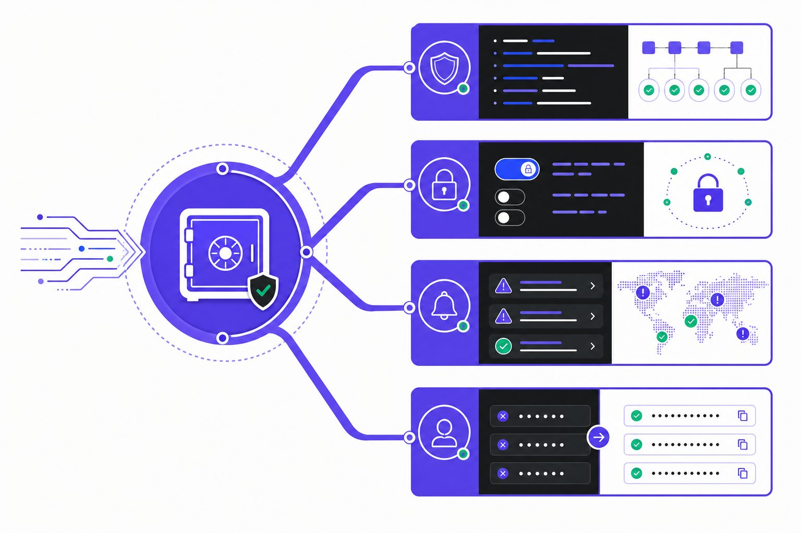
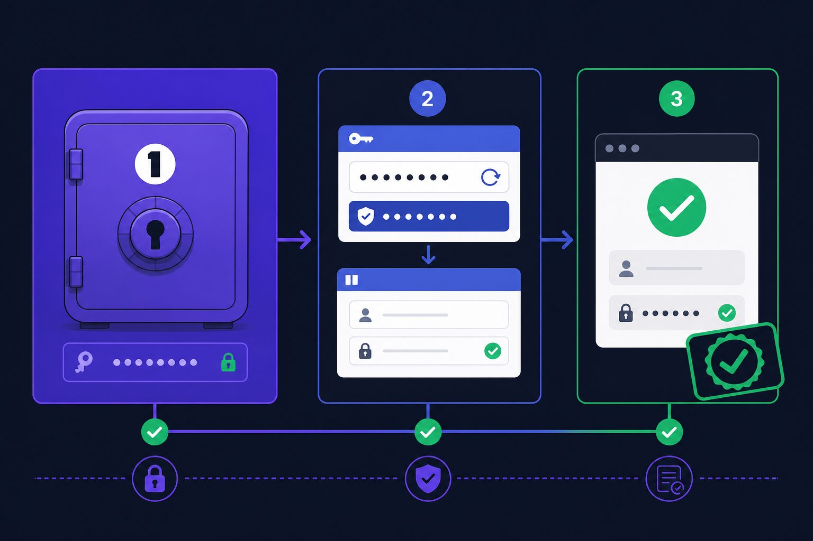
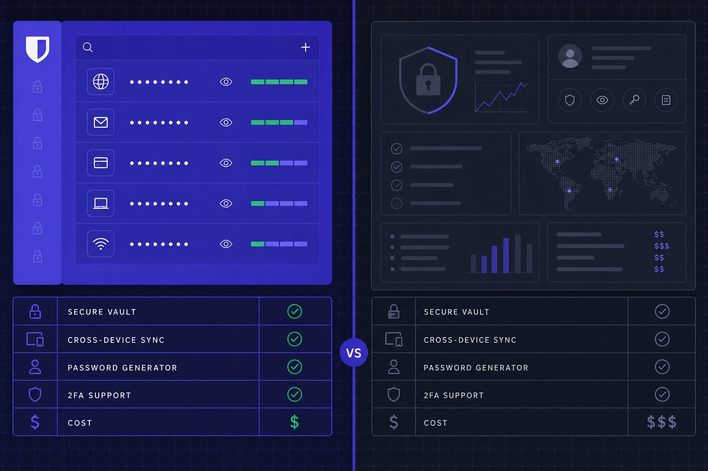
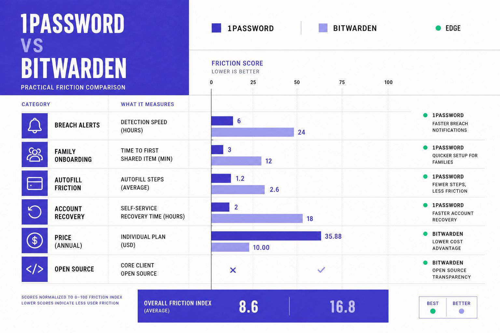

Security Guides
Password Manager Options Compared for Better Security

A password manager is now a security control, not a convenience app. Are password managers really safe? Often yes, but the answer depends on how well the tool resists phishing, protects stolen credentials, and fits daily habits. That matters more now because breach alerts keep coming, while passkeys keep expanding across major platforms. Data from Passkeys: Benefits, limitations, and will they replace passwords? shows breach screening databases now track over 16 billion compromised records, according to the June 2025 data leak reported by Cybernews. Research indicates 19% of Active Directory accounts had compromised passwords in 2025, up from 14% in 2024. This comparison examines how 1Password and Bitwarden differ on security behavior, platform support, pricing, and practical use. The goal stays neutral and clear: match each option to specific risk levels, workflows, and login habits.
Table of Contents
Password Manager Comparison Criteria

This password manager comparison uses clear criteria first. The analysis looks at encryption design, default protections, breach monitoring, and whether each tool improves password habits after a data breach. That last point matters most. A vault can stay secure on paper yet still fail if it nudges people back to weak reuse or messy copy and paste.
Security Model and Breach Readiness
A password manager can be hacked, but that question needs precision. The service, apps, browser extension, or user device can all be attacked. For example, a strong zero-knowledge design limits what an intruder can read from the provider's servers. But it does not erase risks from malware, weak master credentials, or poor recovery settings. The better products assume breaches happen and reduce blast radius.
This section also weighs how each tool reacts after exposure. Does it flag reused passwords, surface breach alerts, and push fast credential changes? That behavior gap is where many reviews stay shallow. A tool should act like a smoke alarm, not just a locked drawer.
Phishing Resistance and Passkeys
Phishing resistance now deserves equal weight. The strongest tools support passkeys, controlled autofill, and stricter vault unlocking on risky devices. Unlike copied credentials, passkeys tie sign-in to the right site, which helps block lookalike pages Passkeys Versus Passwords: What Is the Difference Between Them?. For example, when a user clicks a phishing link to "paypa1.com" instead of "paypal.com," autofill tied to the legitimate domain won't populate credentials, signaling danger immediately. Are passkeys replacing passwords? Not fully yet. They are expanding fast, but most users still need both systems during the transition Passkeys: Benefits, limitations, and will they replace passwords?.
For example, convenience shapes risk. If autofill works cleanly, users stop parking credentials in notes apps. The team at All Things Secured demonstrates this concept clearly:
Platform Support Pricing and Recovery
Coverage also matters. The comparison checks iPhone, Android, Windows, macOS, Linux, and major browsers, plus family sharing, recovery options, and long-term cost. Research from Passkeys: Benefits, limitations, and will they replace passwords? shows compromised password patterns still appear at scale, including 1 million uses of "qwerty" and over 6 million newly added compromised credentials.
1Password Review for Security Focused Users

Overview
1Password is a premium password manager built for people who want fewer security mistakes. Its apps feel polished, setup stays simple, and support spans personal accounts, families, and business teams. That balance matters because secure tools often fail when daily use feels clumsy.
The service also tracks where login habits are changing. It supports traditional passwords well, but it also pushes passkeys across major browsers and operating systems. For example, a user can save a passkey on a phone, then sign in on a laptop without copying codes or reusing weak secrets.
Key Features
1Password’s security model adds a Secret Key to the account password. That extra credential helps protect vault data if a server is exposed. In practical terms, it means stolen login details alone should not unlock the account.
Watchtower is another core feature. It flags weak or reused passwords, highlights unsecured sites, and warns when a known data breach may affect saved accounts. That creates a clear cleanup list instead of leaving users to guess what needs attention first.
Travel Mode stands out for higher risk situations. For example, a journalist crossing into a country with strict device searches can temporarily hide sensitive work credentials, then restore them once safely through customs. Strong autofill also reduces risky copy and paste behavior, which matters because fake login pages often exploit hurried habits.
Passkey support sets 1Password apart from many older tools. Research from Dashlane shows passkeys can make phishing far harder by removing shared secrets from the sign-in flow. Specops also notes that passkeys reduce reliance on memorized credentials, though platform support and recovery models still matter.
Strengths
1Password’s biggest strength is low friction. The apps are consistent, the browser extensions work well, and item sharing feels mature rather than bolted on. For example, a family can share streaming logins, while keeping banking records private.
It also handles phishing resistant workflows better than many rivals. Autofill stays tied to the right domain, and passkeys reduce chances of handing secrets to lookalike sites. According to Dashlane, adoption signals are rising, which makes this support more relevant now.
1Password belongs in the top tier of password manager options because it pairs strong defaults with smooth execution. The combination of robust encryption design, thoughtful account recovery choices, and polished user experience creates a security foundation that stands up to scrutiny.
Weaknesses
The tradeoff is price. There is no permanent free tier, and that makes 1Password harder to justify against lower cost or open source rivals. Is 1Password worth paying for? For users who value simpler protection, polished apps, and less friction, the answer is often yes.
Best For
1Password fits people who will pay for convenience that strengthens security. It suits families, professionals, and teams that want strong sharing, easier passkey use, and better habits after a breach. Those exploring broader tech comparisons may find TechCrunch vs The Verge: Which Tech Publication Should You Follow? useful.
Bitwarden Review for Budget Conscious Users

Overview
Bitwarden is an open source password manager with a simple pitch. It offers solid core security, wide device coverage, and low pricing. That mix gives it one of the clearest value cases in this comparison.
Its open codebase matters for trust. Independent researchers can inspect how the service handles vault security and app behavior. For example, a cautious user who dislikes black-box tools may see Bitwarden as easier to verify than closed rivals.
Bitwarden leans into transparency, flexibility, and cost control. These priorities shape its design and feature set across all platforms.
Key Features
Bitwarden covers the basics well across browsers, phones, desktops, and tablets. Its apps are dependable, and the experience stays consistent across major platforms. That matters for users who move between work and personal devices each day.
The feature set is broad for the price. It includes secure sharing, support for passkeys, and optional self-hosting for users who want tighter control. Passkeys can improve resistance to common sign-in attacks, according to research from Dashlane, which gives Bitwarden a stronger long-term position.
Bitwarden also supports users who want to manage passwords without paying premium-tier rates. Research from Passkeys: Benefits, limitations, and will they replace passwords? shows passkeys can reduce some phishing risks, even though they do not remove every account security problem after a data breach.
Strengths
Cost is the obvious strength, but not the only one. Bitwarden gives budget-focused users strong coverage without stripping out modern security tools. That makes it attractive for students, families, freelancers, and small teams.
Flexibility is another edge. A technical user can accept the hosted service, while a more hands-on user can self-host and shape the setup. For example, that is similar to choosing between renting a safe deposit box and building a locked room at home.
So, is Bitwarden safe enough for most users? In practical terms, yes. Its security posture is credible, and its open ecosystem appeals to users who want more control over how their passwords and passkeys are stored.
Weaknesses
Bitwarden is not as polished as 1Password in daily use. Some screens feel plainer, and certain flows take more clicks than premium rivals. That gap may seem small on paper, but it becomes visible during repeated autofill and sharing tasks.
This also answers the harder question: is Bitwarden better than 1Password? Not across every category. It is stronger on price and openness, while 1Password remains stronger on refinement and smoother workflow design.
Best For
Bitwarden fits price-sensitive users first. It also fits people who prefer open ecosystems, value auditability, or want deployment choice. Readers who enjoy practical product comparisons may also like TechCrunch vs The Verge: Which Tech Publication Should You Follow?.
Password Manager Comparison Table and Best Fit

This comparison makes one point clear. The better password manager is the one that reduces hesitation in daily use. Both 1Password and Bitwarden cover the core job well. The real gap appears in how each handles friction after a data breach alert, a phishing scare, or a family setup that starts smoothly and then stalls.
| Category | 1Password | Bitwarden |
| Pricing | Individual from $2.99/mo (billed annually); Families from $4.49/mo (billed annually) | Premium $1.65/mo (billed annually); Families $3.99/mo (billed annually) |
| Free plan | No permanent free plan | Yes, permanent free plan |
| Passkeys | Strong support across major devices and browsers | Strong support, including free plan |
| Breach monitoring | Watchtower alerts for weak and compromised credentials | Breach and vault health reports, including free-tier breach scanning |
| Sharing | Secure item sharing; Families supports shared vaults and admin controls | Secure sharing; Families includes unlimited shared collections |
| Platform support | iPhone, Android, Windows, macOS, Linux, browser extensions | iPhone, Android, Windows, macOS, Linux, browser extensions |
| Export options | Export supported for migration and backup | CSV and encrypted export options |
| Account recovery | Family admins can help recover accounts | Emergency Access helps with recovery planning |
Beyond these technical specifications, real-world pain points often determine which tool users stick with. Migration from browser-saved passwords often decides whether adoption sticks. In that scenario, both products support import paths, but 1Password usually feels smoother for less technical households. Bitwarden still handles the move well, though it may ask for more patience during cleanup.
Family onboarding creates a different test. Shared vaults sound simple until one person ignores prompts, another forgets a master password, and a third uses three devices. Here, 1Password has an edge for premium ease of use. Its flows feel more guided. Bitwarden remains strong for families that care more about cost control than polish.
Autofill inconsistency is another practical divider. If autofill fails even a few times, users fall back to copy and paste, reused passwords, or browser storage. 1Password tends to feel more refined in this area. Bitwarden is dependable, but some users may notice a rougher edge across certain apps and sites.
Passkey confusion also deserves a direct answer. Neither tool removes the learning curve overnight. Both now support passkeys, but support alone does not end uncertainty. What matters is whether the product helps users store, find, and trust passkeys without guessing where credentials live. Readers who want the least mental overhead may lean toward 1Password. Readers who want flexibility and lower cost may prefer Bitwarden.
Lockout recovery anxiety is the final deal-breaker. Some users want a cleaner safety net for spouses, parents, or mixed-skill households. Others want tighter control, even if recovery takes more planning. That split maps well to the products. 1Password fits premium ease of use and mixed device households. Bitwarden fits budget value and technical control, especially for users who want open-source transparency or self-hosting options.
The practical takeaway is simple. The right password manager is not the one with the longest feature list. It is the one a person will keep using after a breach warning, after a suspicious login page, and after the first passkey prompt appears. Want to learn more? Learn More to explore how we can help.